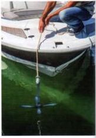
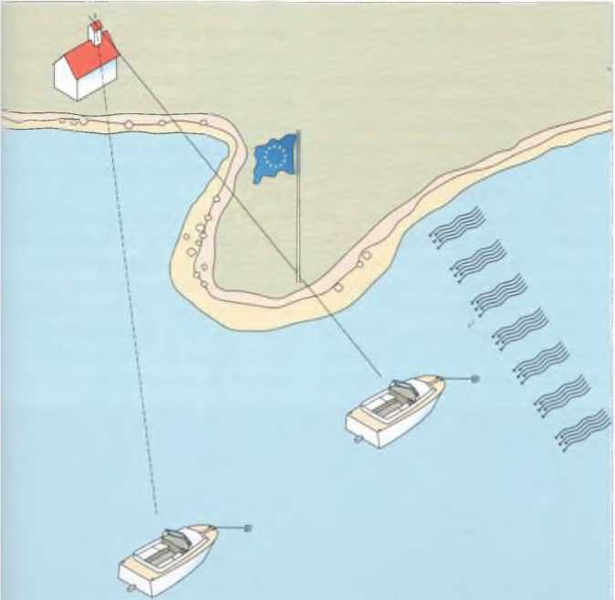

Liegt der Ankerplatz fest, wird auf dem Vorschiff der Anker klariert. Nachsehen, ob die Kette oder Leine auch tatsächlich im Kettenkasten beziehungsweise an einer Klampe belegt und der Splint an Stockankern gesichert ist. Die Leine klar zum Auslaufen aufschießen oder an Deck in Buchten nebeneinander auslegen.

Anker klarieren: Den Anker an Deck holen und die Leine durch die Hand laufen lassen, um zu sehen, ob sie keine Kinken hat. Nicht vergessen, die Leine an Bord zu befestigen, und den Anker unter der Reling durch über Bord geben. Nicht in der Leine stehen. Beim Wegstauen kommt der Anker im Kasten obenauf.
Mit langsamer Fahrt gegen Wind oder Strom – je nachdem wer stärker ist – den Ankerplatz anlaufen. Maschine stopp. Erst wenn das Boot zum Stillstand gekommen ist, lässt man den Anker fallen. Das heißt, man lässt ihn senkrecht auf den Grund absinken. Den Anker nicht etwa in hohem Bogen über Bord werfen. Allzu leicht könnte er dabei mit der Leine unklar kommen, sodass er sich gar nicht in den Grund eingraben kann. Deshalb auch die Leine niemals einfach über Bord werfen, sondern Hand über Hand ausgeben. Hat der Anker den Grund erreicht, mit der Maschine langsam zurückgehen, bis die erforderliche Leinenlänge ausgegeben ist.
Dann die Leine belegen, damit der Anker fassen kann. Ein kurzer Gasstoß zurück zeigt, ob der Anker hält. Schliert er, mehr Leine stecken. Nützt auch das nichts, muss man den Anker aufholen und mit einem neuen Ankermanöver sein Glück versuchen.
Aber auch ein Anker, der zunächst einmal gefasst hat, kann später ins Schlieren geraten, durch hohen Wellenschlag etwa oder eine Winddrehung. Anzeichen dafür ist ein Rucken oder Vibrieren der Leine. Auf stark verschlammten Böden jedoch kann sich die Leine auch völlig neutral verhalten, so als ob der Anker festsäße.
Wenn vorhanden, peilt man zwei feste Landmarken und beobachtet, ob die Peilung steht, das heißt sich nicht gegenüber dem eigenen Standort verändert. Auf größeren Yachten sollten solche Peilungen etwa stündlich kontrolliert werden.
Das Ankermanöver mit einer großen Motoryacht ist im Prinzip gleich, nur wird dort die Ankerkette von einer gebremsten Ankerwinde abgespult.

Hält der Anker? Um festzustellen, ob der Anker hält, sucht man sich zwei – hoffentlich vorhandene – in Deckung liegende Landmarken. Dann beobachtet man, ob sich diese Deckpeilung im Verhältnis zur Bootsrichtung ändert. Ein leichtes Auswandern der Landmarken bedeutet meistens nur, dass das Boot schwojt. Zeigt das Boot jedoch ständig in dieselbe Richtung, während die Landmarken sich voneinander entfernen, schliert der Anker.
Üblicherweise ist nichts leichter als das. Man läuft mit ganz langsamer Fahrt auf den Anker zu – während gleichzeitig die Leine Hand über Hand eingeholt wird – und über ihn hinweg. Meist kommt der Anker dann bereits von selbst, oder es genügt ein kurzer Ruck beim Überfahren, um ihn aus dem Grund zu brechen. Vorsichtig wird der Anker aufgeholt, damit er nicht gegen die Bordwand schlägt, sauber ausgewaschen und an Deck genommen.
Manchmal allerdings kommt der Anker nicht so leicht, weil eine Flunke sich hinter irgendetwas verklemmt oder zu tief in schweren Schlick eingegraben hat. Dann wird die Ankerleine fest belegt, sobald sie senkrecht steht, und mit mehr Kraft über den Anker hinweggefahren. Oder man umkreist den Anker, um auf diese Weise den Zugwinkel am Ankerschaft zu finden, unter dem der Anker freikommt. Dabei muss die an Bord belegte Ankerleine ständig unter Zug gehalten werden.